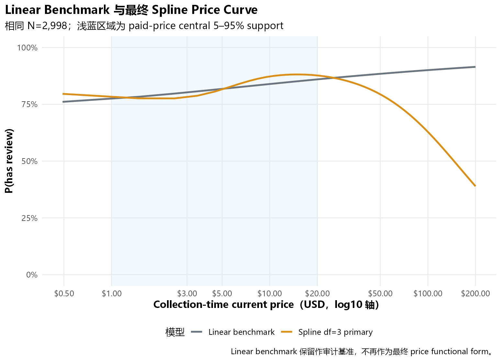
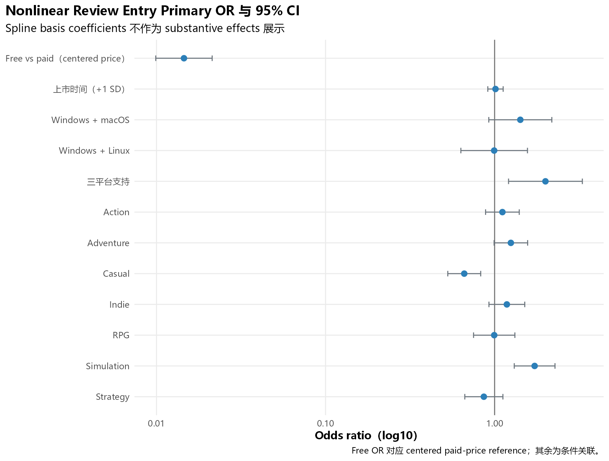
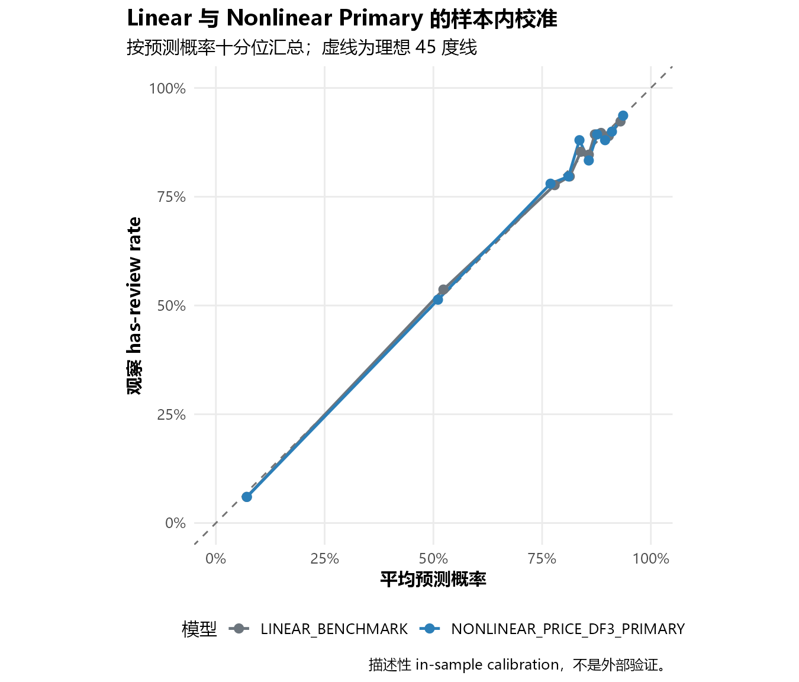
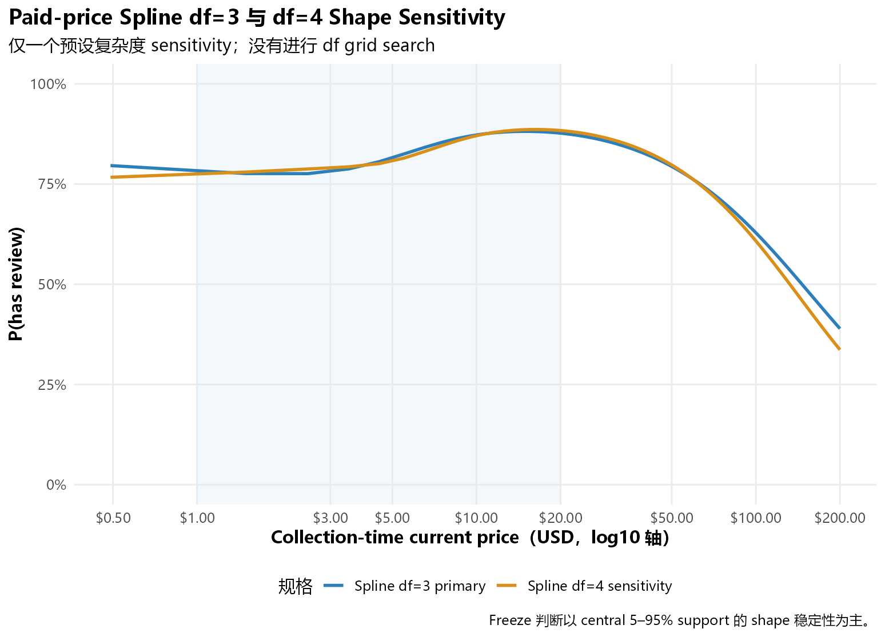
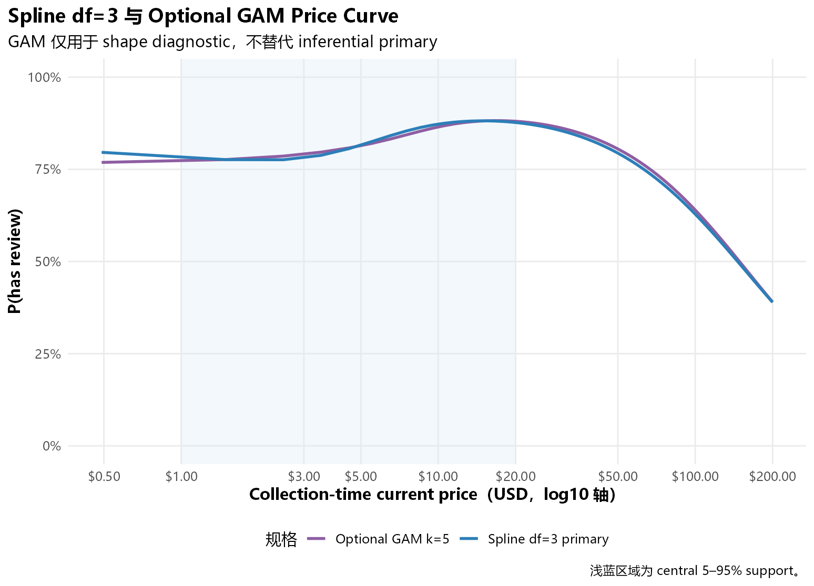

| model_id | n_games | parameter_count | log_likelihood | aic | bic | residual_deviance |
|---|---|---|---|---|---|---|
| LINEAR_BENCHMARK | 2998 | 14 | -1179.934 | 2387.869 | 2471.949 | 2359.869 |
| NONLINEAR_PRICE_DF3_PRIMARY | 2998 | 16 | -1170.514 | 2373.027 | 2469.119 | 2341.027 |
Step 6A.1 非线性 Review Entry 规格冻结
Paid-price natural spline df=3 的人工可视化审计
1 为什么 Step 6A 不能冻结
Step 6A 的 Logistic framework、样本、校准和 separation 均正常，但单一 linear paid-price term 无法描述观察到的 price-response shape。本轮只修复这个已识别的 functional-form misspecification，不进行广泛模型搜索，也不进入 count model。
2 Linear Benchmark
Linear 规格继续作为审计 benchmark。Nonlinear spline 只有在全部冻结条件通过时才成为最终 entry model。
3 Paid Price Nonlinearity

人工审计重点：linear 曲线是否掩盖了中价位附近的平台状峰值，以及高价尾部是否被错误解释为精确规律。
4 Spline Parameterization
| spline_df | intercept_in_basis | centered_basis | center_price_usd | center_log1p_price | center_basis_1_raw | center_basis_2_raw | center_basis_3_raw | internal_knot_1_log1p | internal_knot_2_log1p | internal_knot_3_log1p | boundary_knot_lower_log1p | boundary_knot_upper_log1p | training_n | training_price_min_usd | training_price_max_usd | prediction_rule |
|---|---|---|---|---|---|---|---|---|---|---|---|---|---|---|---|---|
| 3 | FALSE | TRUE | 6.000014 | 1.945912 | 0.04211 | 0.605661 | -0.33196 | 1.607436 | 2.301585 | NA | 0.398776 | 5.303255 | 2597 | 0.49 | 199.99 | Reuse saved knots, Boundary.knots, and centering basis; free rows equal zero |
| comparison_id | same_rows | reduced_rank | full_rank | combined_rank | max_reduced_projection_residual | strictly_nested | formal_lrt_valid | lrt_deviance_difference | lrt_df_difference | lrt_p_value | conclusion |
|---|---|---|---|---|---|---|---|---|---|---|---|
| FULL_MARKET_LINEAR_VS_DF3_SPLINE | TRUE | 14 | 16 | 16 | 0 | TRUE | TRUE | 18.84139 | 2 | 8.103e-05 | Reduced linear column space is contained in the frozen natural-spline column space |
| STEP6A_PAID_ONLY_LINEAR_VS_DF3_SPLINE | TRUE | 13 | 15 | 15 | 0 | TRUE | TRUE | 18.93634 | 2 | 7.727e-05 | Reduced linear column space is contained in the frozen natural-spline column space |
Knots 和 Boundary.knots 只从有效 paid-market price population 计算一次。Prediction 明确复用这些值和同一 centering basis；free rows 的三个 spline columns 全部等于 0。Spline basis coefficients 不作独立业务解释。
5 Price Data Support
| paid_price_n | min_usd | p01_usd | p05_usd | p25_usd | p50_usd | p75_usd | p95_usd | p99_usd | max_usd | n_ge_20_usd | n_ge_30_usd | n_ge_50_usd | n_ge_100_usd | central_support_definition |
|---|---|---|---|---|---|---|---|---|---|---|---|---|---|---|
| 2597 | 0.49 | 0.99 | 0.99 | 2.99 | 4.99 | 9.99 | 19.99 | 39.99 | 199.99 | 126 | 46 | 18 | 6 | Paid-market empirical 5th to 95th percentile |

人工审计重点：$30 以上的 CI 是否快速扩大，以及高价尾部下降是否由少量 observations 支撑。主要解释固定在 empirical 5th–95th percentile。
6 Final Nonlinear Price Curve

| peak_price_usd | peak_predicted_probability | peak_ci95_lower | peak_ci95_upper | local_plateau_definition | plateau_lower_price_usd | plateau_upper_price_usd | plateau_width_usd | peak_within_central_5_95_support | interpretation |
|---|---|---|---|---|---|---|---|---|---|
| 14.92192 | 0.88149 | 0.8411 | 0.91268 | Contiguous prices within 0.5 percentage points of fitted peak | 11.06614 | 20.29533 | 9.22918 | TRUE | Descriptive fitted maximum; not an optimal or causal price |
这里的 peak 是模型曲线在 observed support 内的描述性最大值，不是“最优价格”，也不是因果结论。
7 Representative Price Contrasts
| price_usd | predicted_probability | ci95_lower | ci95_upper | link_estimate | link_standard_error | support_region |
|---|---|---|---|---|---|---|
| 0.99 | 0.78340 | 0.71036 | 0.84212 | 1.28560 | 0.19821 | CENTRAL_5_95 |
| 2.99 | 0.78079 | 0.72329 | 0.82917 | 1.27029 | 0.15788 | CENTRAL_5_95 |
| 4.99 | 0.81566 | 0.76579 | 0.85689 | 1.48720 | 0.15435 | CENTRAL_5_95 |
| 9.99 | 0.87259 | 0.83329 | 0.90370 | 1.92404 | 0.16069 | CENTRAL_5_95 |
| 14.99 | 0.88149 | 0.84107 | 0.91270 | 2.00665 | 0.17369 | CENTRAL_5_95 |
| 19.99 | 0.87702 | 0.83344 | 0.91042 | 1.96447 | 0.18074 | CENTRAL_5_95 |
| 29.99 | 0.85504 | 0.79989 | 0.89695 | 1.77468 | 0.19852 | OUTSIDE_CENTRAL_5_95 |
| 49.99 | 0.79395 | 0.69771 | 0.86546 | 1.34890 | 0.26148 | OUTSIDE_CENTRAL_5_95 |
| contrast_id | price_1_usd | price_2_usd | probability_1 | probability_2 | probability_difference | percentage_point_difference |
|---|---|---|---|---|---|---|
| 4.99_TO_9.99 | 4.99 | 9.99 | 0.81566 | 0.87259 | 0.05693 | 5.69305 |
| 9.99_TO_14.99 | 9.99 | 14.99 | 0.87259 | 0.88149 | 0.00890 | 0.89050 |
| 14.99_TO_29.99 | 14.99 | 29.99 | 0.88149 | 0.85504 | -0.02645 | -2.64549 |
8 Free vs Paid
| paid_reference_price_usd | paid_reference_probability | free_probability | free_minus_paid_probability_difference | free_minus_paid_percentage_point_difference | scope |
|---|---|---|---|---|---|
| 6.00001 | 0.83354 | 0.06784 | -0.7657 | -76.56983 | One-at-a-time conditional contrast at centered paid-price reference |
Free association 可能反映产品组成、曝光、质量、开发成熟度、受众和 Steam 发行策略。不能解释为免费导致无人评论。
9 Platform
| model_id | term | estimate_log_odds | std_error | z_value | p_value | odds_ratio | or_ci95_lower | or_ci95_upper | direction | interpretation | |
|---|---|---|---|---|---|---|---|---|---|---|---|
| 4 | NONLINEAR_PRICE_DF3_PRIMARY | platform_segmentWindows + macOS | 0.35008 | 0.21902 | 1.59838 | 0.10996 | 1.41918 | 0.92386 | 2.18007 | POSITIVE | Conditional association |
| 5 | NONLINEAR_PRICE_DF3_PRIMARY | platform_segmentWindows + Linux | -0.00603 | 0.23144 | -0.02605 | 0.97922 | 0.99399 | 0.63151 | 1.56453 | NEGATIVE | Conditional association |
| 6 | NONLINEAR_PRICE_DF3_PRIMARY | platform_segmentWindows + macOS + Linux | 0.69250 | 0.25643 | 2.70058 | 0.00692 | 1.99871 | 1.20915 | 3.30386 | POSITIVE | Conditional association |
10 Genre
| model_id | term | estimate_log_odds | std_error | z_value | p_value | odds_ratio | or_ci95_lower | or_ci95_upper | direction | interpretation | |
|---|---|---|---|---|---|---|---|---|---|---|---|
| 7 | NONLINEAR_PRICE_DF3_PRIMARY | genre_action | 0.10642 | 0.11701 | 0.90951 | 0.36308 | 1.11229 | 0.88434 | 1.39899 | POSITIVE | Conditional association |
| 8 | NONLINEAR_PRICE_DF3_PRIMARY | genre_adventure | 0.22144 | 0.11663 | 1.89856 | 0.05762 | 1.24787 | 0.99286 | 1.56837 | POSITIVE | Conditional association |
| 9 | NONLINEAR_PRICE_DF3_PRIMARY | genre_casual | -0.41355 | 0.11441 | -3.61463 | 0.00030 | 0.66130 | 0.52846 | 0.82753 | NEGATIVE | Conditional association |
| 10 | NONLINEAR_PRICE_DF3_PRIMARY | genre_indie | 0.16676 | 0.12440 | 1.34056 | 0.18006 | 1.18147 | 0.92584 | 1.50769 | POSITIVE | Conditional association |
| 11 | NONLINEAR_PRICE_DF3_PRIMARY | genre_rpg | -0.00524 | 0.14358 | -0.03649 | 0.97089 | 0.99477 | 0.75077 | 1.31808 | NEGATIVE | Conditional association |
| 12 | NONLINEAR_PRICE_DF3_PRIMARY | genre_simulation | 0.54507 | 0.14149 | 3.85225 | 0.00012 | 1.72473 | 1.30702 | 2.27594 | POSITIVE | Conditional association |
| 13 | NONLINEAR_PRICE_DF3_PRIMARY | genre_strategy | -0.14655 | 0.13240 | -1.10687 | 0.26835 | 0.86368 | 0.66627 | 1.11958 | NEGATIVE | Conditional association |

人工审计重点：Adventure、Casual、Simulation 的方向和 CI 是否保持；其他不确定关联不作强结论。
11 Model Diagnostics
| check | n_flagged | details |
|---|---|---|
| glm_not_converged | 0 | converged = TRUE |
| rank_deficient_model_matrix | 0 | rank = 16 of 16 |
| absolute_coefficient_gt_10_or_se_gt_10 | 0 | none |
| fitted_probability_below_1e_6 | 0 | Complete/quasi-separation heuristic |
| fitted_probability_above_1_minus_1e_6 | 0 | Complete/quasi-separation heuristic |
| categorical_zero_event_cell | 0 | Raw categorical outcome cells |
| categorical_zero_non_event_cell | 0 | Raw categorical outcome cells |
| glm_warning | 0 | warning count = 0 |
| n_games | parameter_count | n_influence_diagnostics_not_defined | max_absolute_deviance_residual | max_absolute_standardized_deviance_residual | n_absolute_standardized_residual_gt_2 | n_absolute_standardized_residual_gt_3 | max_leverage | threshold_2p_over_n | n_leverage_above_2p_over_n | threshold_3p_over_n | n_leverage_above_3p_over_n | max_cooks_distance | threshold_4_over_n | n_cooks_above_4_over_n | n_cooks_above_0_5 | n_cooks_above_1 |
|---|---|---|---|---|---|---|---|---|---|---|---|---|---|---|---|---|
| 2998 | 16 | 0 | 2.49932 | 2.50406 | 161 | 0 | 0.11809 | 0.01067 | 148 | 0.01601 | 22 | 0.00932 | 0.00133 | 269 | 0 | 0 |
Influence thresholds 是审计工具，不是自动删点规则。
12 Calibration / AUC / Brier

| model_id | auc | auc_standard_error | auc_ci95_lower | auc_ci95_upper | brier_score | binary_log_loss | diagnostic_scope |
|---|---|---|---|---|---|---|---|
| LINEAR_BENCHMARK | 0.798973 | 0.010490 | 0.778413 | 0.819533 | 0.117982 | 0.393574 | In-sample descriptive fit; not a model-selection contest |
| NONLINEAR_PRICE_DF3_PRIMARY | 0.804436 | 0.010338 | 0.784174 | 0.824699 | 0.116924 | 0.390432 | In-sample descriptive fit; not a model-selection contest |
这些指标只作 descriptive fit comparison。AUC 不是本轮选择 nonlinear form 的主要理由。
13 Release Sensitivity
Primary 的 linear days 替换为 release month；price spline 的 frozen basis 不变。
14 Genre Sensitivity
在 nonlinear price model 上加入 Early Access、Sports、Racing；不加入更稀疏类别，不改变 primary genre set。
15 Price Curve Sensitivity

| model_id | max_absolute_probability_difference_full_support | max_absolute_probability_difference_central_5_95 |
|---|---|---|
| RELEASE_MONTH_SENSITIVITY | 0.017447 | 0.015927 |
| EXPANDED_GENRE_SENSITIVITY | 0.012624 | 0.002468 |
16 df=4 Shape Sensitivity

| model_id | spline_df | n_games | aic | bic | peak_price_usd | max_abs_probability_difference_vs_df3_full | max_abs_probability_difference_vs_df3_central_5_95 | converged | warning_count |
|---|---|---|---|---|---|---|---|---|---|
| NONLINEAR_PRICE_DF3_PRIMARY | 3 | 2998 | 2373.027 | 2469.119 | 14.92192 | 0.000000 | 0.000000 | TRUE | 0 |
| PRICE_SPLINE_DF4_SENSITIVITY | 4 | 2998 | 2373.941 | 2476.038 | 16.22990 | 0.052672 | 0.011682 | TRUE | 0 |
只运行 df=4 这一项有限 sensitivity；没有进行 df grid search、knot optimization 或超参数搜索。
17 Optional GAM Diagnostic
| status | package_available | k | edf | reference_df | smooth_test_statistic | smooth_p_value | aic | max_abs_probability_difference_vs_df3_full | max_abs_probability_difference_vs_df3_central_5_95 | warning_count | note |
|---|---|---|---|---|---|---|---|---|---|---|---|
| RUN | TRUE | 5 | 3.28015 | 3.703278 | 27.33929 | 2.2e-05 | 2372.983 | 0.02734 | 0.010521 | 0 | Diagnostic only; not eligible to replace the inferential primary model automatically |

GAM 仅检查 df=3 是否遗漏明显 shape，不自动替代当前 inferential model。
18 人工审计清单
- $14–15 附近或重新估计后的 peak 是否 visually meaningful？
- peak 是否是宽 plateau，而不是精确单点？
- $30 以上区域 CI 是否快速扩大？
- 高价尾部下降是否由极少 observations 驱动？
- df=3 与 df=4 在 central support 是否一致？
- release / genre sensitivity 后 curve 是否稳定？
- nonlinear price 后 free effect 是否仍保持极强？
- 是否存在 separation、数值不稳定或单个高影响游戏支配模型？
19 Freeze Decision
| criterion | passed | threshold_or_rule |
|---|---|---|
| convergence | TRUE | glm converged |
| no_separation | TRUE | all separation heuristics zero |
| influence_acceptable | TRUE | all diagnostics defined and max Cook’s D < 0.5 |
| calibration_acceptable | TRUE | maximum decile absolute gap <= 0.05 |
| release_curve_stable | TRUE | central 5-95% max probability difference <= 0.03 |
| genre_curve_stable | TRUE | central 5-95% max probability difference <= 0.03 |
| df4_central_shape_stable | TRUE | central 5-95% df4-vs-df3 max probability difference <= 0.05 |
| no_numerical_instability | TRUE | full rank, no primary warnings, finite coefficients |
| step6a1_status | price_functional_form | review_entry_model_frozen | ready_for_step6b | final_entry_model | next_gate |
|---|---|---|---|---|---|
| PASS | SPLINE ADEQUATE | TRUE | TRUE | Logistic regression with centered frozen natural spline df=3 for paid collection-time price | Human approval before Step 6B |
Logistic framework 没有失败。最终判断只针对 paid-price functional form：linear benchmark 是否应由 frozen natural spline df=3 取代。Step 6B 在本报告完成前始终保持 blocked。